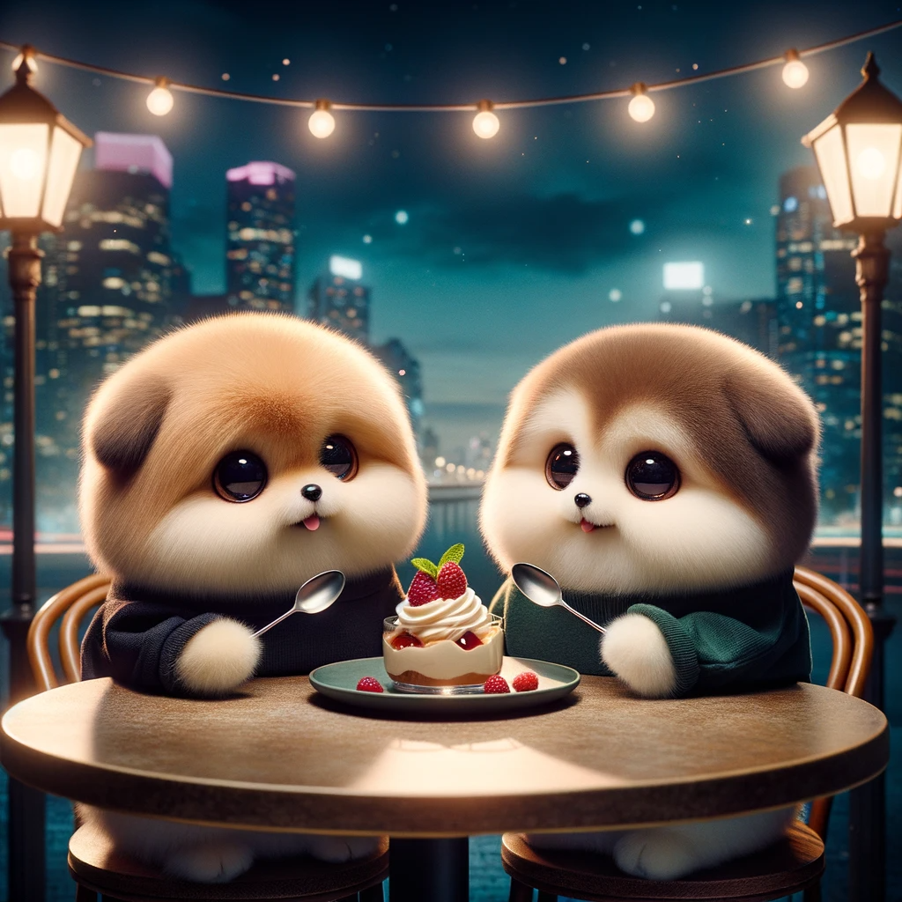
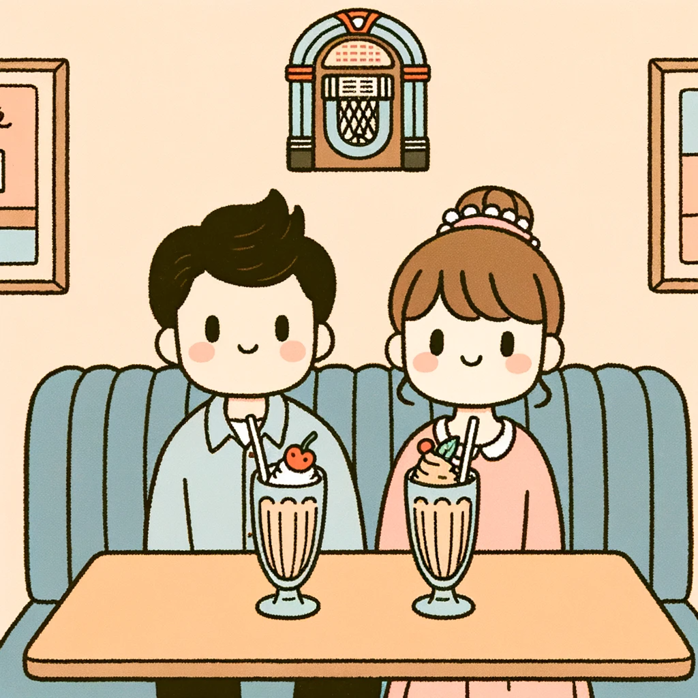
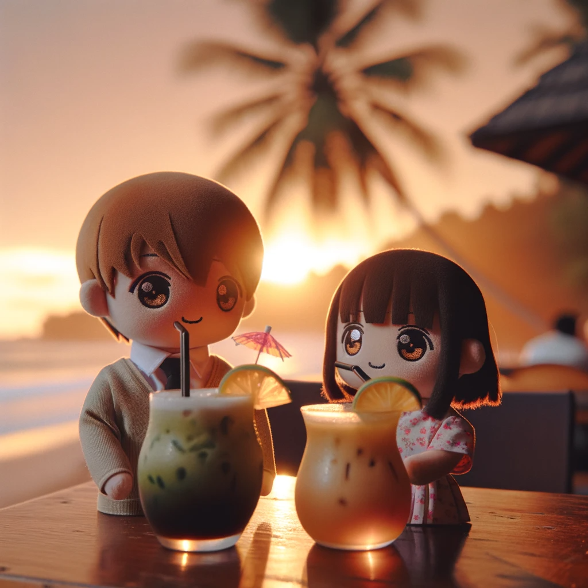
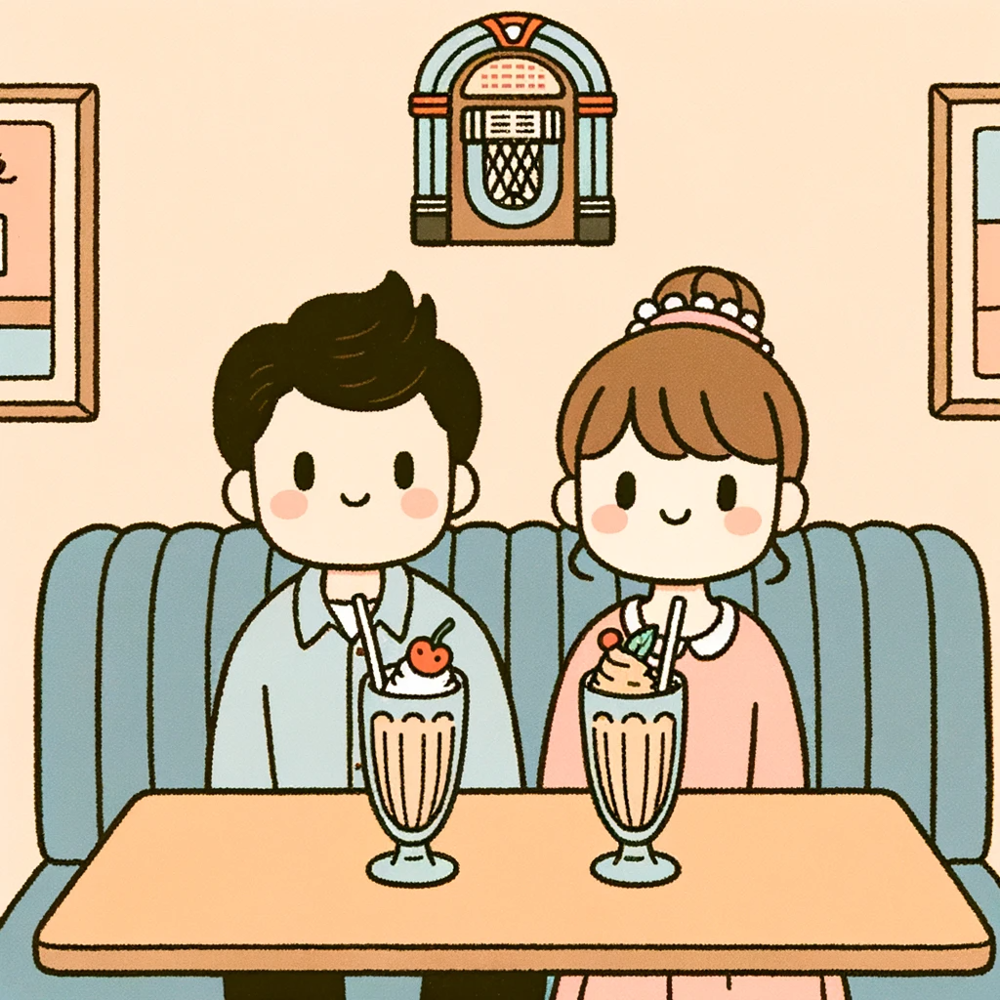
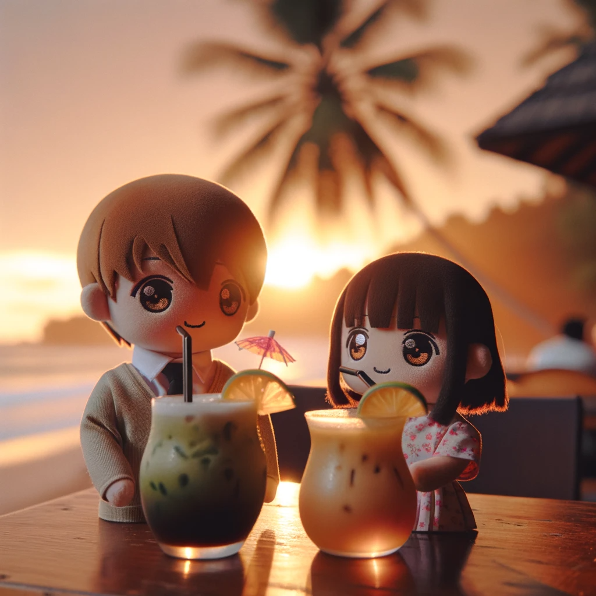

Feliz cumpleanos 22 Pochi 💖

Para el/la futura lectora de esta carta,
Esta es una carta por el cumpleanos 22 de mi princesa, la persona que amo mas que a nada en este mundo y que me motiva a ser mejor cada dia desde que entro a mi vida. Soy una persona que ama muy fuerte y que le da mucha importancia a las personas, asi que creeme que mi princesa es incomparable e invaluable en mi mundo.
Ya paso un ano desde la primera vez que estoy en un cumpleanos a su lado, es muy curioso como mientras pasan dias, semanas, meses, y mas anos lo mucho que una relacion puede seguir evolucionando. La vida ha cambiado muchisimo en muy poco tiempo y es realmente increible como se dan las cosas. De un mes a otro empezamos a llamarnos de una forma a otra, creamos nuevas palabras, nuevas manias que solo entendemos los dos, y tants nuevos recuerdos. Es simplemente una locura!
Sabes, dicen que el amor siempre tiene algo de locura, por eso se que nos amamos muy profundamente, pues estando juntos podemos sacar nuestros ninos interiores y realmente disfrutar muchisimo. Aunque hay otro lado de esto, y es que poco a poco nuestra mutua compania no ha hecho reconectar con algunas cosas que hemos empezado a sanar, cosas que quizas ambos nos habiamos olvidado, cosas que nos han hecho crecer mucho.
Eso es algo maravilloso de encontrar a la persona con la que quieres pasar el resto de tu vida, todo se convierte en una aventura donde creces de maneras inesperadas, pero aun asi muy bonitas. Aprendes que la vida es mas que salir y quedarse siempre hasta tarde queriendo encajar con todos, y es mas encontrar la paz con uno mismo. Aprendes el valor real de la compania correcta, porque a veces mejor es menor cantidad y mayor calidad. Aprendes tambien que un buenos dias cada dia si es importante si viene de tu princesa y que un dia sin ello es un dia que no podras dar ese 101%.
Quiero poder decir con mucha alegria a traves de esta carta que estoy extremadamente feliz de contar con mi princesa en mi vida y muy orgulloso de todos los logros que consiguio en este ano por si sola, porque ella puede decir que tuvo ayuda de muchas personas en este camino, pero lo que realmente siempre fue el motor para que logre todo en tan poco tiempo es su propia vision del futuro que quieres para ti y tu familia. Es y siempre sera increible como ser humano.
Ademas de esto te queria mostrar como somos Pochis realmente, le pedi a una inteligencia artificial que nos creara siendo Pochis por completo en una cita y estos fueron algunos de los resultados que me dio:
 



Si, probablemente no entiendas que son los Pochis, pero tienes que saber que si somos con mi princesa, y esto es un hito para mostrarle el amor que le tengo.
Te amo mi princesita hermosa, con todo mi corazon.
Con mucho amor,
Pochi ♥️